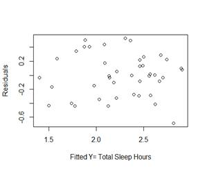

Analysis of Sleep in Mammalian Species
Catherine Rauch
6/7/2020
The data set used in this report includes brain weight (g) and body weight (kg), life span (years), gestation time (days), time sleeping (hrs/day), time dreaming (non slow wave sleep in hrs/day) and predation and danger indices (1 as the minimum and 5 as the maximum) for 62 species of mammals. This data file was obtained from Carnegie Mellon University’s Department of Statistics website. Note that the variable, ‘Index’ is a summation of 3 other indices: Danger Index, Predation Index and Exposure Index, all which take values 1-5 such that Index takes a value 3 – 15. The first goal was to predict the time spent sleeping from these variables. A model was found using stepwise regression and it was concluded that TotalSleep can be predicted by BodyWt, Gestation and Index. After this had been determined, a relationship between time spent sleeping and time spent dreaming was explored and found to be linear. This linear fit was used to make a prediction about how many hours a day a mammal who sleeps 8 hours total will dream. The 95% prediction interval was 2.63 hours to 4.67 hours. From there the question was poised, what predictor variables were significant in determining time spent dreaming? The best fit predictors were pulled from a model best fit using AIC, these included TotalSleep, BodyWt, Gestation, and Index.
1. Can a mammal’s hours of sleep be predicted by body/brain weight, life span, gestation, predation, and exposure?
2. Is there an association between mammalian dreaming time and total sleep, and if so, what is the expected dreaming time of a mammal that sleeps 8 hours a day?
3. What predictor variables for response variable time spent dreaming would be in the ‘best fit model’?
The summary function and a scatterplot matrix will be computed to draw preliminary observations about the data and the relationship between variables. The data will be checked for n/a’s and other conditions that may require a transformation.
To answer question 1, step wise regression will be preformed. After determining which variables are of importance, the best fit model will be fit, outliers will be flagged and removed if necessary. LINE assumptions will be checked through graphs and statistic tests available through Rstudio packages before a final model is proposed.
To answer question 2, a model will be fit between the two variables. The null hypothesis, the variable total sleep is not significant to time spend dreaming will be tested. If a relationship is found, a 95% prediction interval will be computed.
To answer question 3, stepwise regression will be preformed and the best fit model chosen using AIC. Any outliers or leverage points will be determined from internally studentized residuals and the model will be adjusted. This adjusted model will be checked for LINE assumptions by graphing, including residuals vs fit, Q-Q plots, and histograms.
The data was first examined using the summary function. A total of 38 N/A values were found, these were removed. The variance within each of the variables was high; so a log was applied to the whole dataset to stabilize this. This was possible because all variables of interest were positive and the data ranged over several orders of magnitude for example body weight ranged from 2lbs to 7000lbs.
The variables of interest were TotalSleep, Time spent Dreaming, Brain Weight, Life Span, Gestation time, Body Weight and Index. A pair graph was drawn to view initial relationships.
It can be seen there exists a few positive linear relationships, such as between total sleep and dreaming, lifespan and brain weight, and bodyweight and brain weight. A few negative loosely linear relationships exist as well, such as between dreaming and index, brain weight and total sleep and gestation and dreaming.
To answer question one, stepwise regression was preformed, starting with a model containing all variables and using an alpha value of .05 to add a predictor. Step by step, the smallest p-value, given it was below .05, was added to the model and then the rest were retested to determine if they were significant. The best fit model computed had BodyWt , Gestation and Index, as predictors with p-values reported as 0.02746, 0.02879, 0.00152 respectively. All other potential predictors were excluded as their p-values on the last step were greater than significance level .05.
The model was then checked for leverage points. A value of 2p/n was used as a cut-off to identify any observations with leverage. n here is the number of data points = 42. p is number of parameters including the intercept = 4. One data point was flagged as having high leverage. The analysis then continued with 2 models, one containing the data point and one without to determine if it exhibited high influence over the estimated regression function.
Below on the left are the residual graphs of model 1 that does not have the leverage point and on the right model 2 with the point.

The plots of the residual values against the fitted values were observed to determine if the models met the linearity and equal variance assumptions. The plots appear to be random which suggests that the assumption that the relationship is linear is reasonable. As the residuals roughly form a band around the 0 line, this suggests that the variances of the error terms are equal. It can be concluded the assumptions are met in both models.
A Shapiro-Wilk Test was conducted on both sets of residuals. This is a test for normality of residuals with null hypothesis residuals are normal. For model 1, the p-value was reported as 0.4641. For model 2, p-value recorded was 0.4896. Since both are larger than .05, it can be concluded there is not sufficient evidence to reject the null and so the residuals are normal. The graphs indicate there are small outliers present but not large enough to totally disrupt normality. Therefore, we will conclude the normality assumption is met.
It was determined that while the point exhibited high leverage it did not exhibit high influence and so did not affect the predicted responses, estimated slope coefficients, and hypothesis test results. The high leverage point was included in the final model. We can then conclude TotalSleep can be predicted by BodyWt with a slope of -.0524 kgs, Gestation with a slope of -0.14937 days, and Index with a slope of -0.3357.
To answer question two, a simple linear model was fit using the lm() function in Rstudio between Dreaming and TotalSleep. The p-value reported by the summary tables was very small (3.82e-08 ). From this there is enough evidence to reject the null (the slope of total sleep is 0, ie non significant) and conclude that there is a linear association between the mammalian dreaming time and the total time spent sleeping. Then the predict() function in Rstudio was used to obtain a point estimate and a 95% prediction interval on our previously fitted model between Dreaming and TotalSleep. We can be 95% confident that the time spent dreaming for a mammal that slept 8 hours will be between 2.63 hours and 4.67 hours.
To answer question 4, stepwise regression was used. And the best fit model was determined using AIC. This model included TotalSleep, BodyWt , LifeSpan, and Index.
The residual graphs indicated the model had an outlier.
Using the Rstudio function rstandard() the internally studentized residuals were computed to find the outlier. The 11th point had a value of -3.296452137. This value was removed; the model refit and residuals were graphed again. From the graphs below, we can conclude normality is now met.
Our final model includes as predictors the variables, TotalSleep, BodyWt , LifeSpan, and Index, with p-values reported as 9.34e-06, 0.000298, 0.000733, 0.003901 respectively. These p-values indicate that their slopes are significant in predicting time spent dreaming.
A mammal’s total time spent sleeping was able to be predicted by BodyWt, Gestation, and Index. The slopes of these variables were all negative which indicates that the higher the body weight, gestation time and index the lower the total hours of sleep a mammal gets. An association between time spent dreaming and total sleep was found to be fit with a linear model. The slope of total sleep was found to be large enough to be significant, as well as positive, which indicates that as total sleep increases so does time spent dreaming. From this model, it was determined that a mammal that sleeps a total of 8 hours a day, the predicted time spent dreaming is between 2.63 hours and 4.67 hours. A more complex model was fitted to determine what variables were significant in determining total time spent dreaming. The variables that were included in the final model were, TotalSleep, BodyWt , LifeSpan, and Index.
It makes sense that the model found body weight to be significant in determining total time spent sleeping because smaller animals have a higher metabolic rate and higher body and brain temperatures compared to larger animals. This means those that are smaller need more sleep. As seen in our data set, an African Elephant sleeps 3 hours a day while a rat sleep 13 hours a day. As well as, for index, the more danger a mammal is in, the higher the predation index, so the less sleep they would get as sleep often makes an animal more vulnerable. More vulnerability means easier to hunt or attack by other animals. Our findings were specific to mammals; our models likely wouldn’t be very effective in predicting the time spent dreaming of other animal families like reptiles.
# import data file into R
Data
<- read.csv("mammalsleeping.csv")
Data <- subset(Data,select = -c(Species))
summary(Data)
## BodyWt BrainWt NonDreaming
Dreaming
## Min. :
0.005 Min. : 0.14 Min. : 2.100 Min. :0.000
## 1st Qu.:
0.600 1st Qu.: 4.25 1st Qu.: 6.250 1st Qu.:0.900
## Median :
3.342 Median : 17.25 Median : 8.350 Median :1.800
## Mean :
198.790 Mean : 283.13 Mean : 8.673 Mean :1.972
## 3rd Qu.:
48.203 3rd Qu.: 166.00 3rd Qu.:11.000 3rd Qu.:2.550
## Max.
:6654.000 Max. :5712.00 Max. :17.900 Max. :6.600
##
NA's :14 NA's :12
##
TotalSleep LifeSpan Gestation Index
## Min. :
2.60 Min. : 2.000 Min. : 12.00 Min. : 3.000
## 1st Qu.:
8.05 1st Qu.: 6.625 1st Qu.: 35.75 1st Qu.: 4.250
## Median
:10.45 Median : 15.100 Median : 79.00 Median : 6.500
## Mean
:10.53 Mean : 19.878 Mean :142.35 Mean : 7.903
## 3rd
Qu.:13.20 3rd Qu.: 27.750 3rd Qu.:207.50 3rd Qu.:12.000
## Max.
:19.90 Max. :100.000 Max. :645.00 Max. :15.000
## NA's
:4 NA's :4 NA's :4
Data
<- na.omit(Data)
################
Data = log(Data)
Data <- subset(Data,select = -c(NonDreaming,
Dreaming))
mod0 = lm(TotalSleep ~1 , data = Data)
add1(mod0, ~.+BrainWt + LifeSpan + Gestation + BodyWt + Index, data = Data, test = 'F')
mod1
= lm(TotalSleep ~ BodyWt,
data = Data)
add1(mod1, ~.+ Gestation + LifeSpan + BrainWt + Index, data = Data, test = 'F')
mod2
= lm(TotalSleep ~ BodyWt
+ Index, data
= Data)
add1(mod2, ~.+ LifeSpan + Gestation + BrainWt, test = 'F')
mod3
= lm(TotalSleep ~ BodyWt
+ Gestation + Index,
data = Data)
add1(mod3, ~.+ LifeSpan + BrainWt, test = 'F')
mod.final = mod3
summary(mod.final)
##
## Call:
## lm(formula
= TotalSleep ~ BodyWt + Gestation + Index, data = Data)
##
## Residuals:
##
Min 1Q Median 3Q Max
## -0.68526
-0.25015 -0.00442 0.22299 0.52962
##
##
Coefficients:
##
Estimate Std. Error t value Pr(>|t|)
##
(Intercept) 3.60424 0.31762 11.348 9.08e-14 ***
## BodyWt
-0.05254 0.02291 -2.293 0.02746 *
## Gestation
-0.14937 0.06573 -2.273 0.02879 *
## Index
-0.33547 0.09816 -3.418 0.00152 **
## ---
## Signif. codes:
0 '***' 0.001 '**' 0.01 '*' 0.05 '.' 0.1 ' ' 1
##
## Residual
standard error: 0.3138 on 38 degrees of freedom
## Multiple
R-squared: 0.6321, Adjusted R-squared: 0.603
##
F-statistic: 21.76 on 3 and 38 DF, p-value: 2.273e-08
p
= 4
n = 42
point = p/n
abs(hatvalues(mod.final)) > 2 * point # check for leverage
points
update.Data <- Data[-c(42),]
mod4
= lm(TotalSleep ~ BodyWt
+ Index + Gestation,
data = update.Data)
add1(mod4, ~.+ LifeSpan + BrainWt, data = update.Data ,test = 'F')
res
= residuals(mod4)
fit = fitted(mod4)
plot(fit, res, xlab = 'Fitted Y= Total Sleep
Hours',
ylab
= 'Residuals')
qqnorm(res)
qqline(res)
shapiro.test(res) # test for normality
hist(res)
res2
= residuals(mod.final)
fit2 = fitted(mod.final)
plot(fit2, res2, xlab = 'Fitted Y= Total Sleep Hours', ylab = 'Residuals')
qqnorm(res2)
qqline(res)
shapiro.test(res2) # test for normality
###############################
summary(lm(Dreaming ~ TotalSleep, data = Data))
fit
= lm(Dreaming ~ TotalSleep,
data = Data)
new
= data.frame(TotalSleep
= 8)
predict(fit, new, interval = "prediction", level = .95)
########################
Data <- read.csv(“mammalsleeping.csv")
Data <- subset(Data,select = -c(Species, NonDreaming))
Data
<- na.omit(Data)
################
model0 = lm(Dreaming ~ 1, data = Data)
model.all = lm(Dreaming ~., data = Data)
step(model0, scope = list(lower = model0, upper = model.all))
mod.AIC
= lm(Dreaming ~ TotalSleep
+ BodyWt + LifeSpan
+ Index, data
= Data)
summary(mod.AIC)
##
## Call:
## lm(formula
= Dreaming ~ TotalSleep + BodyWt + LifeSpan + Index,
## data =
Data)
##
## Residuals:
##
Min 1Q Median 3Q Max
## -0.76670
-0.16257 -0.00766 0.16511 0.61531
##
##
Coefficients:
##
Estimate Std. Error t value Pr(>|t|)
##
(Intercept) 0.76161 0.48831 1.560 0.127585
##
TotalSleep 0.46277 0.08977 5.155 9.34e-06 ***
##
BodyWt 0.05082 0.01269 4.004 0.000298 ***
## LifeSpan
-0.11450 0.03101 -3.692 0.000733 ***
## Index
-0.25736 0.08343 -3.085 0.003901 **
## ---
## Signif.
codes: 0 '***' 0.001 '**' 0.01 '*' 0.05 '.' 0.1 ' ' 1
##
## Residual
standard error: 0.2891 on 36 degrees of freedom
## Multiple
R-squared: 0.6969, Adjusted R-squared: 0.6632
## F-statistic:
20.69 on 4 and 36 DF, p-value: 6.31e-09
res
= residuals(mod.AIC)
fit = fitted(mod.AIC)
plot(fit, res, xlab = 'Fitted Y= Time Spent
Dreaming',
ylab
= 'Residuals')
qqnorm(res)
qqline(res)
shapiro.test(res) # test for normality looks great
hist(res)
rstudent(mod.AIC) # outlier is 16
mod.AIC = lm(Dreaming ~ TotalSleep + BodyWt + LifeSpan + Index, data = Data[-10,])
res
= residuals(mod.AIC)
fit = fitted(mod.AIC)
plot(fit, res, xlab = 'Fitted Y= Time Spent
Dreaming',
ylab
= 'Residuals')
qqnorm(res)
qqline(res)
shapiro.test(res) # test for normality
hist(res)